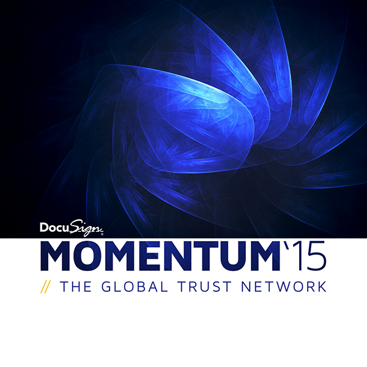
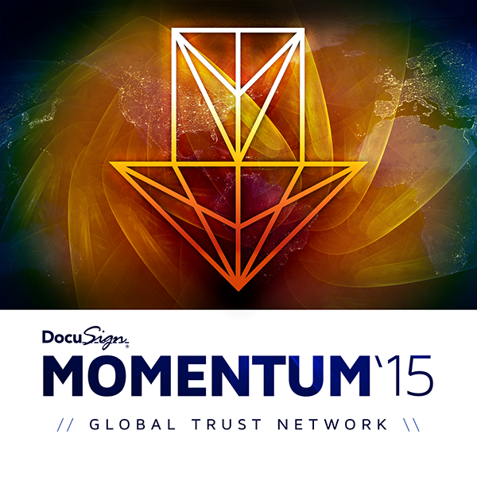
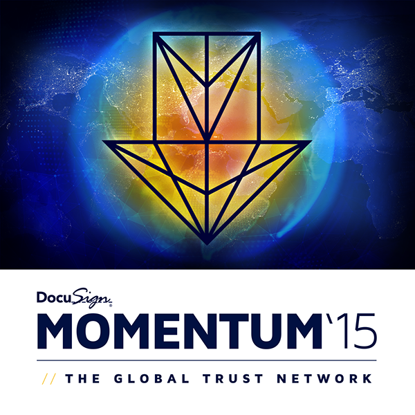
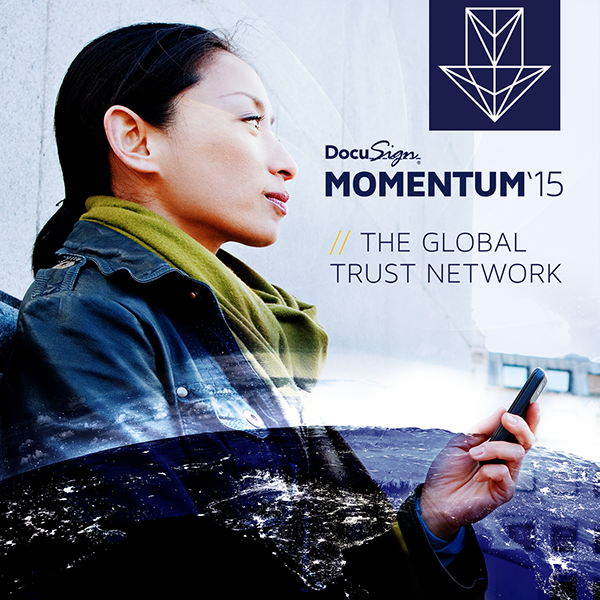
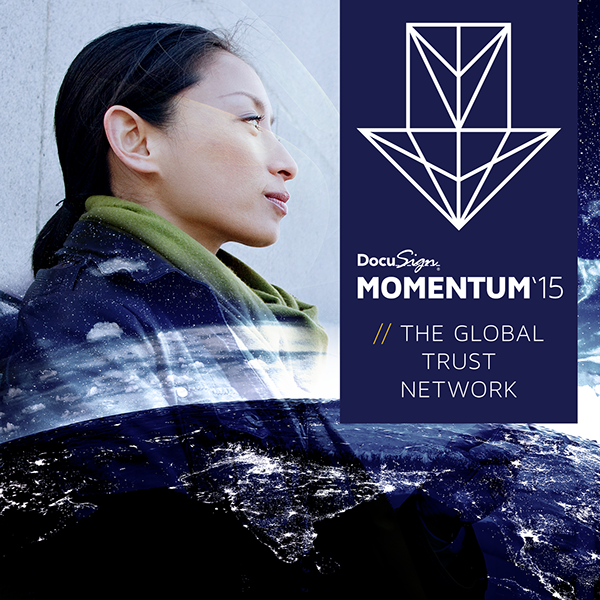
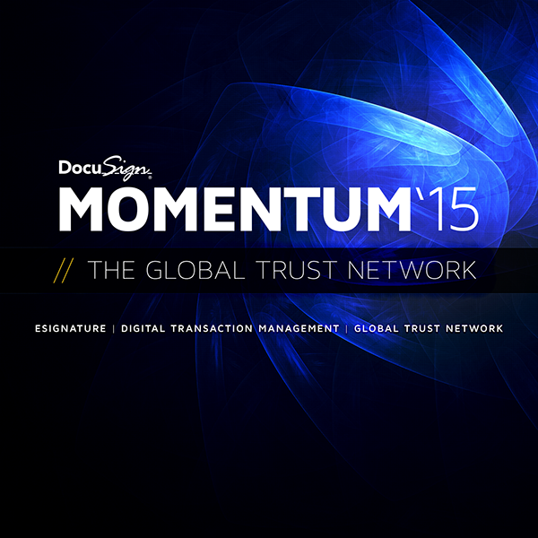

Co-Marketing at Enterprise Scale
At DocuSign I led creative for the company's most visible external partnerships — building co-branded campaign systems that had to simultaneously honor two enterprise brand identities while driving measurable adoption.
The work spanned major technology partnerships including Salesforce, Google, Microsoft, and Apple, alongside a parallel program of standalone DocuSign brand campaigns spanning digital, print, and out-of-home — including the "Just DocuSign It" and "Close Business Fast" lines.







Two Brands, One Campaign
Co-branded campaigns have a particular design challenge: every asset has to work for both companies at once. That means navigating two sets of brand guidelines, two approval chains, and two audiences — while still producing work that's visually coherent and commercially effective. The solution was system thinking first: establish a shared visual grammar at the outset of each partnership, then build the asset library from that foundation.
The standalone DocuSign campaigns ran alongside the partner work and pushed in a different direction — tighter, more confident, more direct. "Just DocuSign It" and "Close Business Fast" were concepted and executed in-house, with campaign architectures designed to scale across formats and markets without additional design cycles. The co-marketing program drove a 30% lift in platform adoption across partnership channels over a sustained three-year run.